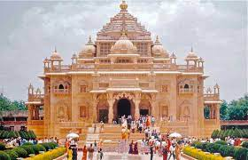
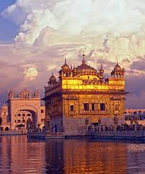

Temples
1. Somnath Temple:


Somnath temple is one of the 12 Jyotirlingas of Lord Shiva, the renowned Hindu Architecture -Somnath temple is known to be one of the most gorgeous temples in Gujarat that e xist from prehistoric times. It is believed that the temple was eventually built by the Moon God in gold, recreated by Ravana in silver and then by Lord Krishna in wood and then King Bhimdev in stone. The temple was badly spoiled and robbed of its riches by Mahmud of Ghazni in 1024 AD. It is also known as Deo Pattan, Prabhas Pattan, and Somnath Pattan. The present structure was established by the maintenance of Sardar Vallabhabhai Patel in the year 1950. Now, it is being managed by Shree Somnath Trust. The seven-story structure of the temple is in Chalukya style of construction and claims of wonderful surroundings as it is right on its original site, by the sea.
2.Dwarkadhish Temple:

Dwarkadhish Temple best known as Jagat Mandir. Many people call this temple as Trilok Sundar Mandir. Dwarkadhish temple is a part of the admired Chardham yatra in the Hindu religion. Temple is dedicated to Lord Krishna, the temple is more than 2500 years old and appeals devotees from all across the globe. The main door is known as ‘Moksha Dwara’ which means Door to Salvation is the North entrance, on the other hand, the south door is known as ‘Swarga Dwara’ which means Gate to Heaven. On the backside of the door, there are 56 steps, which leads to prominent River Gomati.
Placed on the union of Gomati River and the Arabian Sea, the splendid sandstone the temple has 5 floors, braced by 60 columns and has stunning wonderful artifacts. The temple is also the 108th Divya Desam of Lord Vishnu. On top of this temple is a flag with a sun and a moon on it, which is changed three times a day. The existing structure of the temple was created around the 15th and 16th
centuries.
3. Akshardham Temple:

One of the prime temples in Gujarat, the Akshardham temple in Gandhinagar is managed by the flourishing Hindu Swaminarayan Group. This temple is a great art of architecture, spread in more than 23 acres of shaped lawns; this huge temple was built by around 1000 skilled workers. One of the chief tourist attractions of the temple is a 45-minute water show, which was organized after sundown. Swaminarayan Akshardham temple was made from 6000 metric tons of pink sandstone and is known to be the place of Lord Swaminarayan. Spend a day in discovering this wonder.
The temple was founded in the year 1992, this temple is a fine work of artistry and is a one-stop work of art of education, religion, art, research,exhibitions, and architecture. The golden idol of Lord Swaminarayan is giant, seven feet in height. The idol lies amid idols of his ideal devotees, Aksharbrahma Gunatitanand Swami and Aksharmukta Goplanand Swami. Sahajanand Vanis must-visit, comprising a park for kids, a waterfall, a lake, and an herbal garden.
4. Ardhkuwari Temple:
Before making the Vaishno Devi Bhavan her abode, Mata Vaishnodevi is believed to have meditated in the ArdhKuwari Gufa for 9 months before beheading the demon Bhairavnath. Located halfway to Vaishno Devi Temple, Ardh Kuwari acts as a stopover for the pilgrims on their journey up to the Bhavan.
5.Vaishno Devi Mandir:

Located in Trikuta hills, 13 kms from Katra, Vaishno Devi Mandir is a Hindu temple dedicated to Vaishno Devi - a manifestation of Goddess Durga. This renowned shrine is one of the holiest pilgrimages for Hindus. It is believed that during pooja and aarti, Goddesses herself arrives at the Holy Cave.
6. Golden Temple:

Also called Sri Harmandir Sahib or Swarna Mandir, the shrine was designed by Guru Arjan Sahib and its foundation laid by Muslim saint Hazrat Mian Mir ji of Lahore on 1st December 1588. Among one of the most beautiful temples in India, the dome of the Golden Temple is made up of actual Gold and is considered to be the most important pilgrim site for Sikhs.
7. Kedarnath Temple:


Kedarnath is the highest among the 12 Jyotirlingas. This temple, over a thousand years old, is built of enormous stone slabs over a large rectangular dais. The present temple is believed to be re-built by Adi Shankaracharya, originally built by the Pandavas. During the recent floods in Uttarakhand, the temple remained intact even though many other structures had faced a lot of destruction.
8. Dilwara Temple:
The Dilwara temples, located about 3 kms from Mount Abu, were mainly built by Vastupal and Tejpal, between the 11th and 13th centuries AD. Surrounded by lush greenery and located on a height above the surrounding areas, these temples are world famous for their stunning use of marble - many visitors consider these to be architecturally superior to even the Taj Mahal. Everything from the doors to the ceilings and the pillars are extremely intricately designed - at one point, the marble ceiling is so finely that it's actually translucent.